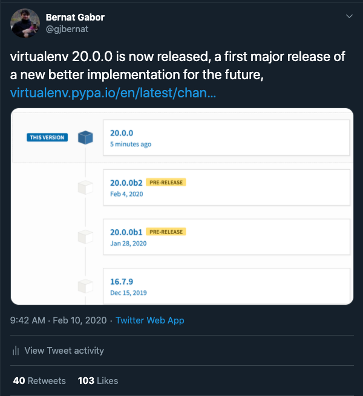
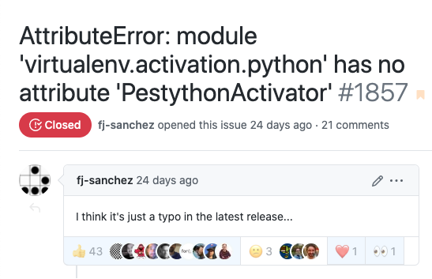
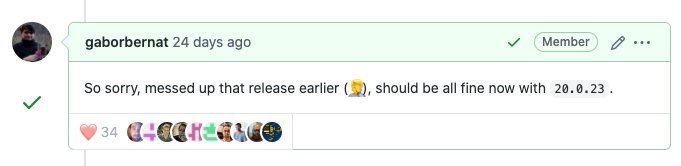

What is virtualenv?
-
a tool to create Python virtual environments
-
python executables that behave as it would be a separate Python installation from the system one
- packages installed do not affect the system Python or visible from it
what is virtualenv
$ virtualenv env --python python3.8
$ env/bin/python -m pip install httpie
$ env/bin/http https://httpie.org/hello
HTTP/1.1 200 OK
Connection: keep-alive
Content-Length: 116
Content-Type: text/x-rst;charset=utf-8
Date: Thu, 02 Jul 2020 17:00:46 GMT
Hello, World! 👋
~~~~~~~~~~~~~~~~
Thank you for trying out HTTPie 🥳
I hope this will become a friendship.
What is a virtual environment?
besides isolating package installs from system mirrors system in all of:
- implementation, version, build, etc
$ /usr/bin/python -c 'import sys; import os; print(sys.executable); print(sys.version); print(os.__file__)'
/System/Library/Frameworks/Python.framework/Versions/2.7/Resources/Python.app/Contents/MacOS/Python
2.7.16 (default, Apr 17 2020, 18:29:03)
[GCC 4.2.1 Compatible Apple LLVM 11.0.3 (clang-1103.0.29.20) (-macos10.15-objc-
/System/Library/Frameworks/Python.framework/Versions/2.7/lib/python2.7/os.pyc
$ virtualenv env --python /usr/bin/python
$ env/python -c 'import sys; import os; print(sys.executable); print(sys.version); print(os.__file__)'
/tmp/env/bin/python
2.7.16 (default, Apr 17 2020, 18:29:03)
[GCC 4.2.1 Compatible Apple LLVM 11.0.3 (clang-1103.0.29.20) (-macos10.15-objc-
/System/Library/Frameworks/Python.framework/Versions/2.7/lib/python2.7/os.pyc
How popular is virtualenv?
How popular is virtualenv?
How popular is virtualenv?
How popular is virtualenv?
virtual environments in depth
virtual environment creation tools
- virtualenv
$ virtualenv env --python python3.8
- venv as per PEP-405
$ python3.8 -m venv env
Differences of the two tools
|
virtualenv |
venv |
| Installation |
yes, 3rd party package |
no, standard library |
| Update |
anytime via pip |
with the interpreter |
| Python version |
2.7 and 3.4 or later |
3.3 or later |
| Python flavour |
PyPy, CPython |
self-support for 3.3+ |
| Configurability |
CLI + environment variables + per user config file |
CLI |
| Extensibility |
via plugins that can be installed alongside |
by extending the base class |
| Performance |
by using the cached seed mechanism <500ms |
2 seconds+ per invocation |
| API |
rich: e.g. lookup executable, site package dir |
limited as per PEP-405
|
In a world with venv is virtualenv needed?
- yes, virtualenv is a place to innovate and improve virtual environments
- as of today offers compared to venv better
- creation time (performance)
- API
- extensibility
Old pains
- single file - of spurious if/else branches
- test suite ~ 60% line coverage
- rudimentary plugin system makes it hard to extend
- things made sense 12 years ago are not true anymore
Earlier rewrite efforts
At least 2 attempts, both abandoned half way through, challenges:
- deceptively simple at first, lot of nuances and edge cases
- hard to test - a myriad of python distributions/version/platforms
How I jumped in
- tox maintainer since June 2017 (virtualenv dependency)
- virtualenv maintainer since 2018 October
- tox is slow, started a rewrite to address in 2019 April, found reasons:
- virtual environment creation is slow in virtualenv
- virtualenv API lacks ability to provide path to site packages
- interpreter discovery happens both in tox and virtualenv
- 🥺 pause on tox rewrite, start virtualenv rewrite 😱
The Plan

The plan - identify components
- creators
- seeders
- activators
- interpreter discovery
Creator
$ virtualenv env --without-pip --activators ""
created virtual environment CPython3.8.3.final.0-64 in 46ms
creator CPython3Posix(dest=/tmp/env, clear=True, global=False)
env
├── bin
│ ├── python ⇒ /Users/bgabor8/.pyenv/versions/3.8.3/bin/python3.8
│ ├── python3 ⇒ python
│ └── python3.8 ⇒ python
├── lib
│ └── python3.8
│ └── site-packages
│ ├── _virtualenv.pth
│ └── _virtualenv.py
└── pyvenv.cfg
Seed mechanism
$ virtualenv env --activators ""
created virtual environment CPython3.8.3.final.0-64 in 493ms
creator CPython3Posix(dest=/tmp/env, clear=True, global=False)
seeder FromAppData(download=False, pip=bundle, setuptools=bundle, wheel=bundle, via=copy, app_data_dir=/tmp/virtualenv)
added seed packages: pip==20.1.1, setuptools==47.3.1, wheel==0.34.2
env
└── lib
└── python3.8
└── site-packages
├── easy_install.py
├── pip
├── pip-20.1.1.dist-info
├── pip-20.1.1.virtualenv
├── pkg_resources
├── setuptools
├── setuptools-47.3.1.dist-info
├── setuptools-47.3.1.virtualenv
├── wheel
├── wheel-0.34.2.dist-info
└── wheel-0.34.2.virtualenv
Activators
$ virtualenv env --without-pip
created virtual environment CPython3.8.3.final.0-64 in 124ms
creator CPython3Posix(dest=/tmp/env, clear=True, global=False)
activators BashActivator,CShellActivator,FishActivator,PowerShellActivator,PythonActivator,XonshActivator
env
└── bin
├── activate
├── activate.csh
├── activate.fish
├── activate.ps1
├── activate.xsh
├── activate_this.py
├── python ⇒ /Users/bgabor8/.pyenv/versions/3.8.3/bin/python3.8
├── python3 ⇒ python
└── python3.8 ⇒ python
Interpreter discovery
$ virtualenv env --python 2
created virtual environment CPython2.7.18.final.0-64 in 1008ms
creator CPython2Posix(dest=/tmp/venv, clear=True, global=False)
$ virtualenv env --python PyPy3.6.9-64
created virtual environment PyPy3.6.9.final.0-64 in 373ms
creator PyPy3Posix(dest=/tmp/venv, clear=True, global=False)
What we continue to support?
- cross version -> if installed on 3.6, can create 3.8 if available on host
- Python 2 - CPython for 2 years, PyPy until upstream PyPy does
- no install use (download and run mode)
What to add?
- extensible - allow Jython/IronPython/RustPython to be external plugin
- rich API to get data about the created virtual environments
- unify virtual environment mechanism - adopt venv style - PEP-405
Under construction - until January 2020

Do restricted/beta releases - 2020
The crew - first release
- Siddhant Kumar - migrate activation scripts
- Bernat Gabor - everything else
The crew - community adoption +27 in 3 months
12907 author Bernát Gábor
900 author Siddhant Kumar
286 author Seungmin Ryu
169 author Sorin Sbarnea
113 author Julien Danjou
52 author David Tucker
43 author Anthony Sottile
14 author PRAJWAL M
11 author spetafree
11 author Vincent Philippon
11 author Pradyun Gedam
11 author Nicola Soranzo
9 author Claudio Jolowicz
8 author Ian Wienand
5 author Lumír 'Frenzy' Balhar
3 author Sviatoslav Sydorenko
3 author Michał Górny
3 author Johannes Altmanninger
2 author Xavier Fernandez
2 author Jannis Leidel
1 author txp314
1 author shaido987
1 author mondeja
1 author Thomas Grainger
1 author Theodor Dimitriou
1 author Shantanu
1 author Rowdy Howell
1 author Philippe Ombredanne
1 author Matthew StClair
1 author João Vale
Widely publicize the re-release
Twitter announcement - 15k
impression

Consider people stuck on old version
- keep code on a legacy branch
- add a legacy docs tag on readthedocs
- new changelog at the end points to legacy changelog
- keep releasing community contributions - 16.7.10 -
Feb 24, 2020 (February 10th first new)
CPython is a very diverse snake pit
| sysconfig |
value |
| scripts |
{base}/bin |
| data |
{base} |
| include |
{base}/include/python{py_version_short} |
| stdlib |
{base}/lib64/python{py_version_short} |
| platstdlib |
{platbase}/lib64/python{py_version_short} |
| purelib |
{base}/lib/python{py_version_short}/site-packages |
| platlib |
{platbase}/lib64/python{py_version_short}/site-packages |
Linux distributions - Fedora
Linux distributions - Debian
- Debian does not install
venv by default, python3-venv
- pip uses
distutils paths to install, separate from
sysconfig
- they patch distutils paths to separate
apt and pip
installs
- use distutils paths for virtual environment, sysconfig for host python
Linux distributions - CentOs
- ships with
pip 9 - does not understand python-requires on wheels
- had to vendor
six.ensure_path/ensure_text, relax six
requirement
- Better error message in
setup.py
macOs - so many Python
- install from
python.org/pyenv
- part of the OS
/usr/bin/python -> /System/Library/Frameworks/Python.framework/Versions/2.7
- brew installation via
python@2 and python@3
- XCode - Developer Tools v2
/Library/Frameworks/Python.framework/
- XCode - Developer Tools v3
/Library/Frameworks/Python3.framework/ a
- Apple shipped python are hard coded to static path (Mach-o)
macOs - fixing distutils
- pip uses distutils to determine where to install
- distutils can
be configured via files
| Type of file |
Location and filename |
| system |
prefix/lib/pythonver/distutils/distutils.cfg |
| personal |
$HOME/.pydistutils.cfg |
| local |
setup.cfg
|
- can set
prefix and install_{purelib,platlib,headers,scripts,data}
- closed 5 times, be tenacious about fixing bugs
Windows store Python
PS C:\Users\traveler\git\virtualenv> python -c 'import sys; from pathlib import Path; import os; \
print(sys.executable); \
print(os.path.exists(sys.executable)); \
print(Path(sys.executable).exists())'
C:\Users\traveler\AppData\Local\Microsoft\WindowsApps\PythonSoftwareFoundation.Python.3.7_qbz5n2kfra8p0\python.exe
False
Traceback (most recent call last):
File "string", line 1, in module
File "C:\Program Files\WindowsApps\PythonSoftwareFoundation.Python.3.7_3.7.1776.0_x64__qbz5n2kfra8p0\lib\pathlib.py", line 1356, in exists
self.stat()
File "C:\Program Files\WindowsApps\PythonSoftwareFoundation.Python.3.7_3.7.1776.0_x64__qbz5n2kfra8p0\lib\pathlib.py", line 1178, in stat
return self._accessor.stat(self)
OSError: [WinError 1920] The file cannot be accessed by the system: 'C:\\Users\\traveler\\AppData\\Local\\Microsoft\\WindowsApps\\PythonSoftwareFoundation.Python.3.7_qbz5n2kfra8p0\\python.exe'
PyPy maturing - quick to answer/fix
Expect the unexpected - pyc only mode
- Python 2 uses the host os.py as landmark file to detect stdlib
env
├── bin
│ ├── python
│ ├── python2 ⇒ python
│ └── python2.7 ⇒ python
├── include
│ └── python2.7 ⇒ /2.7.18/include/python2.7
├── lib
│ └── python2.7
│ ├── config
│ │ └── Makefile ⇒ /2.7.18/lib/python2.7/config/Makefile
│ ├── lib-dynload ⇒ /2.7.18/lib/python2.7/lib-dynload
│ ├── os.py ⇒ /2.7.18/lib/python2.7/os.py
│ ├── os.pyc ⇒ /2.7.18/lib/python2.7/os.pyc
│ ├── site-packages
│ └── site.py
└── pyvenv.cfg
Python operates can work with pyc only
benefits of doing this: obfuscate source code or maximize storage
solution: require only one of the py/pyc files
Expect the unexpected - pyc only mode
- Python 2 uses the host os.py as landmark file to detect stdlib
env
├── bin
│ ├── python
│ ├── python2 ⇒ python
│ └── python2.7 ⇒ python
├── include
│ └── python2.7 ⇒ /2.7.18/include/python2.7
├── lib
│ └── python2.7
│ ├── config
│ │ └── Makefile ⇒ /2.7.18/lib/python2.7/config/Makefile
│ ├── lib-dynload ⇒ /2.7.18/lib/python2.7/lib-dynload
│ ├── os.pyc ⇒ /2.7.18/lib/python2.7/os.pyc
│ ├── site-packages
│ └── site.py
└── pyvenv.cfg
Python operates can work with pyc only
benefits of doing this: obfuscate source code or maximize storage
solution: require only one of the py/pyc files
Seeders - app-data - cache
cache what we can cache to avoid performing the same operation
appdirs - for platform specific application data location
- create base image into app data folder:
- validate wheel
- extract wheel
- generate pyc files,
INSTALLER
- fix
RECORDS - add metadata + console script files
- install operation
- generate console scripts (
pip, pip3, pip3.8)
- copy/symlink from app data to
purelib
Seed packages - auto up to date?
- should we
- install latest pip/setuptools/wheel ⇒ convenience and ecosystem
- install embedded pip/setuptools/wheel ⇒ speed and stability
- middle-ground - update every two weeks, use if at least 28 days old
Seed packages - auto up to date?
- should we
- install latest pip/setuptools/wheel ⇒ convenience and ecosystem
- install embedded pip/setuptools/wheel ⇒ speed and stability
- middle-ground update every two weeks, use if at least 28 days old
Seed packages - resilience
new approaches/solutions will expose new failure types
- handle if app data is in read only mode
- always default to safer methods - copy over symlink
Interpreter discovery - trust issues
Be friendly and plan for redistribution
Download only (no install) mode
zipapp content structure
.
├── __main__.py
├── virtualenv
│ └ ...
│── virtualenv-20.0.25.dist-info
│ ├── entry_points.txt
│ ├── LICENSE
│ ├── METADATA
│ ├── RECORD
│ ├── top_level.txt
│ ├── WHEEL
│ └── zip-safe
├── __virtualenv__
│ ├── appdirs-1.4.4-py2.py3-none-any
│ ├── configparser-4.0.2-py2.py3-none-any
│ ├── contextlib2-0.6.0.post1-py2.py3-none-any
│ ├── distlib-0.3.0-py3-none-any
│ ├── filelock-3.0.12-py3-none-any
│ ├── importlib_metadata-1.1.3-py2.py3-none-any
│ ├── importlib_metadata-1.6.1-py2.py3-none-any
│ ├── importlib_resources-1.0.2-py2.py3-none-any
│ ├── importlib_resources-2.0.1-py2.py3-none-any
│ ├── pathlib2-2.3.5-py2.py3-none-any
│ ├── scandir-1.10.0-cp38-cp38-macosx_10_14_x86_64
│ ├── six-1.15.0-py2.py3-none-any
│ ├── typing-3.7.4.1-py2-none-any
│ ├── typing-3.7.4.1-py3-none-any
│ ├── zipp-1.2.0-py2.py3-none-any
│ └── zipp-3.1.0-py3-none-any
├── distributions.json
└── modules.json
zipapp with dynamic dependency
- some dependencies are OS specific
- some dependencies are Python version specific
install_requires =
appdirs>=1.4.3,<2
distlib>=0.3.0,<1
filelock>=3.0.0,<4
six>=1.9.0,<2 # keep it >=1.9.0 as it may cause problems on LTS platforms
importlib-metadata>=0.12,<2;python_version<"3.8"
importlib-resources>=1.0;python_version<"3.7"
pathlib2>=2.3.3,<3;python_version < '3.4' and sys.platform != 'win32'
zipapp with dynamic dependencies
|
3.9 |
3.8 |
3.7 |
3.6 |
3.5 |
3.4 |
2.7 |
| appdirs |
1.4.4 |
1.4.4 |
1.4.4 |
1.4.4 |
1.4.4 |
1.4.4 |
1.4.4 |
| distlib |
0.3.1 |
0.3.1 |
0.3.1 |
0.3.1 |
0.3.1 |
0.3.1 |
0.3.1 |
| filelock |
3.0.12 |
3.0.12 |
3.0.12 |
3.0.12 |
3.0.12 |
3.0.12 |
3.0.12 |
| six |
1.15.0 |
1.15.0 |
1.15.0 |
1.15.0 |
1.15.0 |
1.15.0 |
1.15.0 |
| importlib-metadata |
|
|
1.7.0 |
1.7.0 |
1.7.0 |
1.1.3 |
1.1.3 |
| importlib-resources |
|
|
|
2.0.1 |
2.0.1 |
1.0.2 |
1.0.2 |
| pathlib2 |
|
|
|
|
|
2.3.5 |
2.3.5 |
zipapp content structure
.
├── __main__.py
├── virtualenv
│ └ ...
│── virtualenv-20.0.25.dist-info
│ ├── entry_points.txt
│ ├── LICENSE
│ ├── METADATA
│ ├── RECORD
│ ├── top_level.txt
│ ├── WHEEL
│ └── zip-safe
├── __virtualenv__
│ ├── appdirs-1.4.4-py2.py3-none-any
│ ├── configparser-4.0.2-py2.py3-none-any
│ ├── contextlib2-0.6.0.post1-py2.py3-none-any
│ ├── distlib-0.3.0-py3-none-any
│ ├── filelock-3.0.12-py3-none-any
│ ├── importlib_metadata-1.1.3-py2.py3-none-any
│ ├── importlib_metadata-1.6.1-py2.py3-none-any
│ ├── importlib_resources-1.0.2-py2.py3-none-any
│ ├── importlib_resources-2.0.1-py2.py3-none-any
│ ├── pathlib2-2.3.5-py2.py3-none-any
│ ├── scandir-1.10.0-cp38-cp38-macosx_10_14_x86_64
│ ├── six-1.15.0-py2.py3-none-any
│ ├── typing-3.7.4.1-py2-none-any
│ ├── typing-3.7.4.1-py3-none-any
│ ├── zipp-1.2.0-py2.py3-none-any
│ └── zipp-3.1.0-py3-none-any
├── distributions.json
└── modules.json
Use import hooks within zipapp
zipapp with dynamic dependencies
|
3.9 |
3.8 |
3.7 |
3.6 |
3.5 |
3.4 |
2.7 |
| appdirs |
1.4.4 |
1.4.4 |
1.4.4 |
1.4.4 |
1.4.4 |
1.4.4 |
1.4.4 |
| distlib |
0.3.1 |
0.3.1 |
0.3.1 |
0.3.1 |
0.3.1 |
0.3.1 |
0.3.1 |
| filelock |
3.0.12 |
3.0.12 |
3.0.12 |
3.0.12 |
3.0.12 |
3.0.12 |
3.0.12 |
| six |
1.15.0 |
1.15.0 |
1.15.0 |
1.15.0 |
1.15.0 |
1.15.0 |
1.15.0 |
| importlib-metadata |
|
|
1.7.0 |
1.7.0 |
1.7.0 |
1.1.3 |
1.1.3 |
| importlib-resources |
|
|
|
2.0.1 |
2.0.1 |
1.0.2 |
1.0.2 |
| pathlib2 |
|
|
|
|
|
2.3.5 |
2.3.5 |
Breaking the world
- since 2018 October - 41 successful releases
- Friday evening release - typo in
setup.cfg


- Always be available in the next 1-2 hours post release
Lessons learned
- Have a well defined delivery plan
- Test a lot, automate via CIs
- Always be available post release
- Be ready to periodically re-evaluate things from ground-up
- In general (but especially in opensource) be nice
The straw that almost broke the camel's back
Be nice but have/use code of conducts when needed
How popular is now virtualenv?
🙇 Thank you 🙇
and
🙋Questions🙋